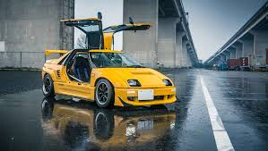

Origins: Post-War Japan (1949–1950s)
Kei cars, short for Keijidōsha (軽自動車, meaning "light automobile"), were introduced in 1949 by the Japanese government. The idea was to create a category of small, affordable cars that could help
mobilize the nation after World War II. With limited space in cities and a need for cost-effective transportation, Kei cars provided a perfect solution.
Initial regulations allowed very small engines (under 150cc for two-stroke or 300cc for four-stroke engines) and compact body dimensions, making them ideal for short-distance, urban travel.
Growth & Popularity (1960s–1970s)
As Japan's economy boomed in the 1960s, Kei cars evolved rapidly. Manufacturers like Suzuki, Honda, Subaru, Daihatsu, and Mitsubishi began producing iconic models like:
Suzuki Suzulight
Subaru 360
Honda N360
In 1976, engine limits increased to 550cc, and more safety and emissions regulations were introduced. Despite competition from larger vehicles, Kei cars remained popular due to low taxes, insurance, and fuel costs.

Modernization & Style (1980s–1990s)
The 1980s and '90s saw a golden era for Kei cars, with sporty and stylish models like:
Honda Beat
Suzuki Cappuccino
Autozam AZ-1
In 1990, the engine limit was raised again to 660cc, and turbocharged options became common. Kei cars were no longer just practical—they were also fun and desirable, especially among younger drivers.

Present Day (2000s–Today)
Today’s Kei cars are safer, more efficient, and more stylish than ever. Popular models include:
Suzuki Alto
Daihatsu Tanto
Honda N-Box
They dominate the Japanese domestic market, especially in rural and urban areas. While still mainly sold in Japan, Kei cars have developed an international cult following due to their compact design, affordability, and quirky charm.